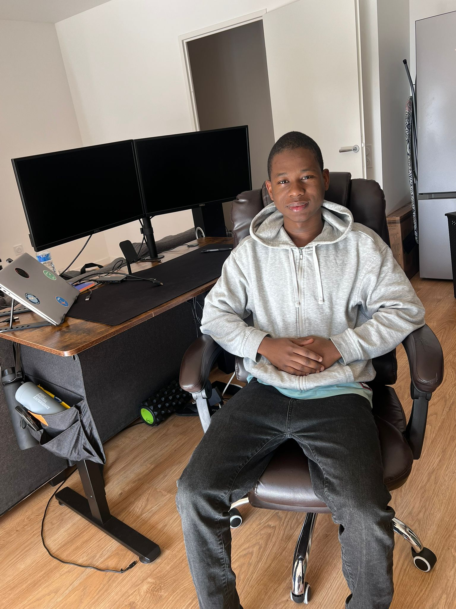

Étudiant en Licence 3 Informatique à l'Université de Limoges, passionné par la cybersécurité et les réseaux. Classé 🥇 #1 au CTF d'initiation CRYPTIS avec 5535 pts. Je recherche un stage, une alternance ou un Master en informatique avec une orientation cybersécurité, réseaux et systèmes — mobile toute la France.

Je suis en Licence 3 Informatique à l'Université de Limoges. Depuis le début, ce sont la cybersécurité et les réseaux qui m'attirent : comprendre comment les systèmes communiquent, identifier leurs vulnérabilités et apprendre à les sécuriser. C'est dans ces domaines que je souhaite construire ma carrière, et c'est pourquoi je vise un Master en informatique avec une orientation cybersécurité, réseaux et systèmes après ma licence.
En TP, je travaille régulièrement avec Wireshark pour la capture et l'analyse de paquets, l'étude des protocoles TCP/IP, DNS et HTTP, ainsi que la détection d'anomalies. Je participe aussi au CTF d'initiation CRYPTIS de ma faculté, où j'ai terminé 🥇 premier avec 5535 points sur des épreuves de cryptographie, reverse engineering, réseau et web.
En parallèle de mes études, je travaille chez O'Tacos à Limoges depuis 2024, une expérience qui m'a permis de développer mon sens de l'organisation, ma rigueur et ma capacité à travailler efficacement sous pression. Je suis également Trésorier de l'AEGL. Je recherche actuellement un stage du 31 mars au 23 mai 2026, une alternance à partir de septembre 2026, ou un Master, et je suis mobile partout en France.
Je suis disponible pour un stage du 31 mars au 23 mai 2026, une alternance à partir de septembre 2026, ou pour intégrer un Master en informatique avec une orientation cybersécurité, réseaux et systèmes. Mobile partout en France.